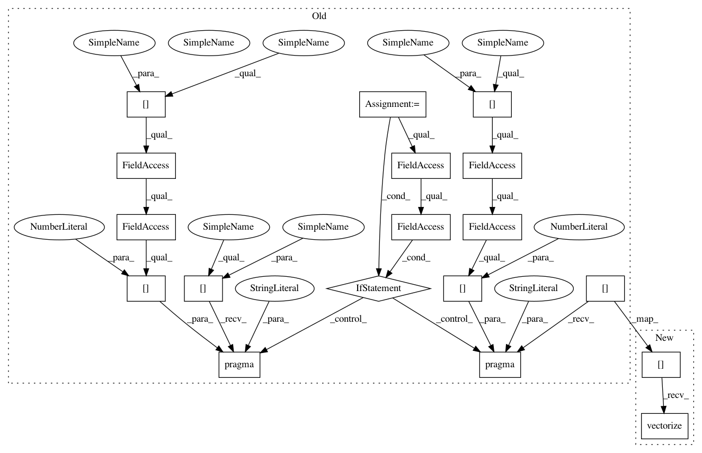

0cfdecdae99582998dae5c2c3fdfd7a2700f10c0,topi/python/topi/x86/conv2d_avx_1x1.py,,_schedule_conv_NCHWc,#Any#Any#Any#Any#Any#Any#,63
Before Change
s[data_vec].parallel(parallel_axis)
data_vec = data_vec.op.input_tensors[0]
if autotvm.GLOBAL_SCOPE.in_tuning:
// only in autotuning, input data of conv2d_NCHWc will be 4-D.
// skip this part during tuning to make records accurate.
// this part will be folded during Relay fold_constant pass.
s[data_vec].pragma(s[data_vec].op.axis[0], "debug_skip_region")
s[kernel_vec].pragma(s[kernel_vec].op.axis[0], "debug_skip_region")
elif isinstance(kernel_vec.op, tvm.te.ComputeOp) and \
kernel_vec.name == "kernel_vec":
// data and kernel are not pre-computed, schedule layout transform here.
// this should only be used by x86 conv2d_nchw, which is for
// testing purpose.
batch, ic_chunk, ih, ic_block, iw = s[data_vec].op.axis
parallel_axis = s[data_vec].fuse(batch, ic_chunk, ih)
s[data_vec].parallel(parallel_axis)
oc_chunk, ic_chunk, oh, ow, ic_block, oc_block = s[kernel_vec].op.axis
s[kernel_vec].reorder(oc_chunk, oh, ic_chunk, ow, ic_block, oc_block)
oc_bn = cfg["tile_oc"].size[-1]
if oc_bn > 1:
s[kernel_vec].vectorize(oc_block)
parallel_axis = s[kernel_vec].fuse(oc_chunk, oh)
s[kernel_vec].parallel(parallel_axis)
C, O = conv_out, last
CC = s.cache_write(C, "global")
batch, oc_chunk, oh, ow, oc_block = s[C].op.axis
After Change
if isinstance(s[data_vec].op, tvm.te.ComputeOp) \
and "pad" in data_vec.op.tag:
batch, ic_chunk, ih, iw, ic_block = s[data_vec].op.axis
s[data_vec].vectorize(ic_block)
parallel_axis = s[data_vec].fuse(batch, ic_chunk, ih)
s[data_vec].parallel(parallel_axis)
data_vec = data_vec.op.input_tensors[0]
In pattern: SUPERPATTERN
Frequency: 3
Non-data size: 18
Instances
Project Name: apache/incubator-tvm
Commit Name: 0cfdecdae99582998dae5c2c3fdfd7a2700f10c0
Time: 2020-04-03
Author: kevinthesunwy@gmail.com
File Name: topi/python/topi/x86/conv2d_avx_1x1.py
Class Name:
Method Name: _schedule_conv_NCHWc
Project Name: apache/incubator-tvm
Commit Name: 0cfdecdae99582998dae5c2c3fdfd7a2700f10c0
Time: 2020-04-03
Author: kevinthesunwy@gmail.com
File Name: topi/python/topi/x86/conv2d_avx_1x1.py
Class Name:
Method Name: _schedule_conv_NCHWc
Project Name: apache/incubator-tvm
Commit Name: 0cfdecdae99582998dae5c2c3fdfd7a2700f10c0
Time: 2020-04-03
Author: kevinthesunwy@gmail.com
File Name: topi/python/topi/x86/conv2d_avx_common.py
Class Name:
Method Name: _schedule_conv_NCHWc
Project Name: apache/incubator-tvm
Commit Name: 0cfdecdae99582998dae5c2c3fdfd7a2700f10c0
Time: 2020-04-03
Author: kevinthesunwy@gmail.com
File Name: topi/python/topi/x86/depthwise_conv2d.py
Class Name:
Method Name: _schedule_depthwise_conv2d_NCHWc_impl